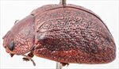
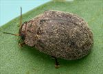
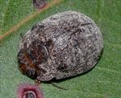
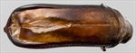
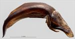
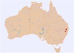

Click on images to enlarge


Male, Wilsons Downfall, NE New South Wales


Female, Bookookoorara, NE New South Wales


Male, Guyra, NE New South Wales


Aedeagus, dorsal view (Wilsons Downfall, NE New South Wales)


Aedeagus, lateral view (Wilsons Downfall, NE New South Wales)


Distribution
Name
Trachymela sp. Ta164
Reference specimen
2017-512, Wilsons Downfall, NENew South Wales.
Adult Description
Length: ♂ 8.8–9.6 mm (n=5), ♀ 8.9–9.9 mm (n=10).
Colouration:
- Head: light- to mid-brown, often with vague areas of darker infuscations on frons, black-tipped mandibles; antennomeres 1–2 light brown, 3–4 grading from light brown to dark brown, 5–11 dark brown or black.
- Pronotum: brown, concolorous with head, invariably with extensive regions of darker fuscous colouration that may take up much of disc, or be confined to anterior margin, or be in the form of small patches of fuscous colouring that are scattered over all but the extreme lateral marginal borders.
- Scutellum: brown, concolorous with lighter region of pronotum, broadly bordered in much darker brown, rarely fully of the much darker brown shade.
- Elytra: dark brown, considerably darker than the lighter-coloured areas of pronotum, usually with the interstices of a lighter shade producing a complex and fine-scale pattern of lighter brown over all of discal surface, sometimes a few thin longitudinal lines of the lighter colour are present, marginal area is usually lighter in colour than disc, humeral callus dark brown.
- Venter & Legs: head dark brown, usually with gula and lateral regions darker, thoracic ventrites dark to very dark brown, often with even darker regions present, abdomen dark brown often grading slightly paler laterally, legs dark brown, epipleura black.
- Cuticular Wax: uniformly light brown to greyish in colour, scattered somewhat unevenly and lightly to moderately densely over whole dorsal surface except scutellum.
Morphology:
- Shape: almost evenly rounded and quite high (H/BL = 42–49%) in lateral aspect but narrow (W/BL = 68–78%), greatest height a little in front of middle of elytral margin.
- Head: punctures relatively large (pd ≈ 2×ef) and slightly unevenly but moderately densely distributed, a few small unpunctured spaces often present adjacent to eyes; antennae long (AL/BL: ♂ 45–50%, ♀ 37–41%), filiform.
- Pronotum: evenly curved transversely over discal region, lateral margins very slightly explanate, with foveal depression very shallow or absent, often with a round, very slightly elevated area near its centre, puncturation always clearly impressed, very evenly and densely (spacing ≈ 2pd) distributed in discal area, puncture size similar to those on head, becoming much coarser and surface more rugose towards lateral margins; front margins join lateral margins in a smoothly rounded right-angle, with lateral margin briefly straight curving smoothly and very gradually towards rear margin, with widest point more than ¾ of distance along margin.
- Scutellum: smooth, unpunctured or lightly punctured with punctures similar to or fractionally smaller than those on adjacent area of pronotum.
- Elytra: surface quite evenly curved with antero-median depression very slight, punctures relatively evenly distributed though mostly obscured by a complex network of thickened interstices, usually lighter in colour than punctures and some forming longitudinal ridges, with much smaller punctures scattered sparingly on the interstices, intersecting interstices sometimes almost form verrucae, but these are barely elevated above the level of the other interstices and are quite inconspicuous, surface discontinuous under humeral callus; vertical extension of epipleura slight (HCE/PW = 0.30–0.32).
- Venter: ventrites project some distance below elytral epipleura; prosternal process variable, narrowest anteriorly, closed anteriorly, sometimes sides fused for a short distance, short setae sparsely scattered along prosternal process, absent from mesoventrite, a single seta on anterior and median trochanter; front edge of metaventrite beveled, truncate; inner posterior margin of epipleura lacking setae.
Male Genitalia (Aedeagus):
- Dimensions: moderately long (LPE/BL = 28–32%).
- Dorsal view: sides of shaft slightly sinuate over central section, narrowing slightly from base before widening to reach its widest about 15–20% of length from apex, from there sides converge towards apex in a smooth arc, dorsal surface smoothly curved with well-defined dorso-median channel present over most of length of central section, dorsolateral channels well-defined, ostium with a clump of setae near apex, tip is a truncated triangle.
- Lateral view: shaft curved strongly near base then almost straight over much of the central section before a pronounced downward bend shortly before apex, thinning towards apex over about 20% of length, tip deflexed.
Immature Stages
Unknown.
Notes
- Morphological Variation: There is little difference in both body size and relative width and height for males and females in this species.
- Host Associations: Ta164 has been collected only from Eucalyptus species in the stringybark group (Eucalyptus : Capillulus).
Copyright © 2026. All rights reserved.